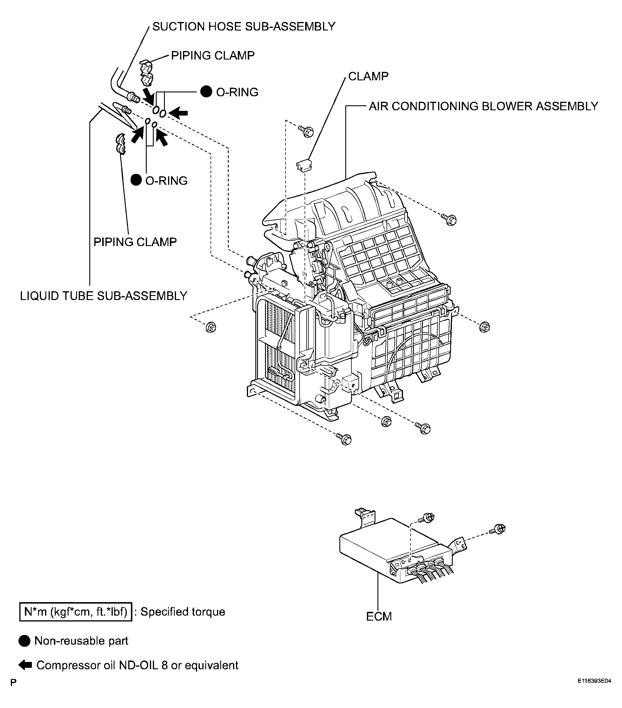
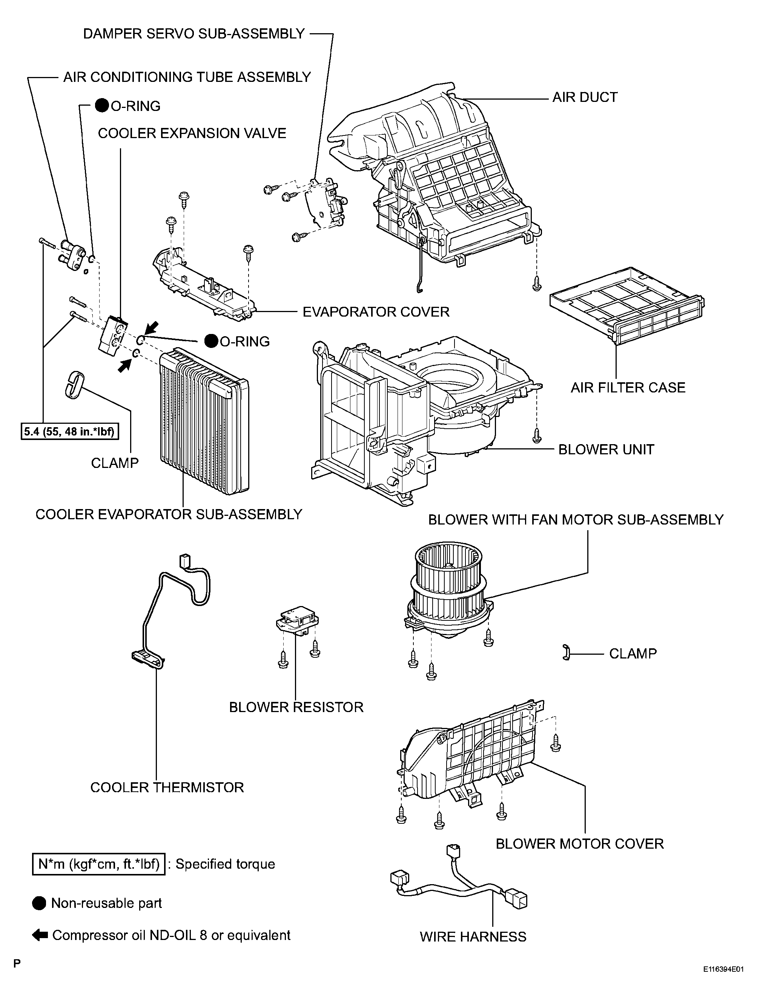

Home
>>
Scion
>>
2006
>>
xB Standard
>>
Repair and Diagnosis (Single Page)
>>
Heating, Ventilation & A/C (HVAC)
>>
HVAC Control Systems
>>
Air Conditioning
>>
Air Conditioning And Blower Unit
>>
Components
Air Conditioning And Blower Unit: Components
Fig 1: Identifying Air Conditioning And Blower Unit Components (1 Of 2)

Courtesy of © TOYOTA, LICENSE AGREEMENT TMS1002
Fig 2: Identifying Air Conditioning And Blower Unit Components (2 Of 2)

Courtesy of © TOYOTA, LICENSE AGREEMENT TMS1002